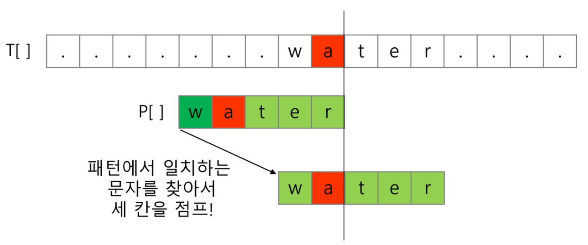

02. 문자열 (string)¶
문자열 (string)
문자열
패턴 매칭
문자열 암호화
문자열 압축
2.1 문자의 표현¶
컴퓨터에서의 문자 표현¶
글자 A를 메모리에 저장하는 방법에 대해서 생각해보자.
물론 칼로 A라는 글자를 새기는 방식은 아닐 것이다. 메모리는 숫자만을 저장할 수 있기 때문에 A라는 글자의 모양 그대로 비트맵으로 저장하는 방법을 사용하지 않는 한 (이 방법은 메모리 낭비가 심하다.) 각 문자에 대해서 대응되는 숫자를 정해 놓고 이것을 메모리에 저장하는 방법이 사용될 것이다.
영어가 대소문자 합쳐서 52이므로 6(64가지)비트면 모두 표현할 수 있다. 이를 코드체계라고 한다.
000000 →
'a', 000001 →'b'
그런데 네트워크가 발전되기 전 미국의 각 지역 별로 코드체계를 정해 놓고 사용했지만
네트워크(인터넷: 인터넷은 미국에서 발전했다.)가 발전하면서 서로 간에 정보를 주고 받을 때 정보를 달리 해석한다는 문제가 생겼다.
그래서 혼동을 피하기 위해 표준안을 만들기로 했다.
바로 이러한 목적으로 1967년, 미국에서 ASCII(American Standard Code for Information Interchange)라는 문자 인코딩 표준이 제정되었다.
ASCII는 7bit 인코딩으로 128문자를 표현하며 33개의 출력 불가능한 제어 문자들과 공백을 비롯한 95개의 출력 가능한 문자들로 이루어져 있다.
출력 가능 아스키 문자 (32 ~ 126)
확장 아스키는 표준 문자 이외의 악센트 문자, 도형 문자, 특수 문자, 특수 기호 등 부가적인 문자를 128개 추가할 수 있게 하는 부호이다.
표준 아스키는 7bit를 사용하여 문자를 표현하는 데 비해 확장 아스키는 1B 내의 8bit를 모두 사용함으로써 추가적인 문자를 표현할 수 있다.
컴퓨터 생산자와 소프트웨어 개발자가 여러 가지 다양한 문자에 할당할 수 있도록 하고 있다. 이렇게 할당한 확장 부호는 표준 아스키와 같이 서로 다른 프로그램이나 컴퓨터 사이에 교환되지 못한다.
그러므로 표준 아스키는 마이크로컴퓨터 하드웨어 및 소프트웨어 사이에서 세계적으로 통용되는 데 비해, 확장 아스키는 픙로그램이나 컴퓨터 또는 프린터가 그것을 해독할 수 있도록 설계되어 있어야만 올바로 해독될 수 있다.
확장 아스키 예

오늘날 대부분의 컴퓨터는 문자를 읽고 쓰는데 ASCII 형식을 사용한다.
그런데 컴퓨터가 발전하면서 미국 뿐 아니라 각 나라에서도 컴퓨터가 발전했으며 각 국가들은 자국의 문자를 표현하기 위하여 코드체계를 만들어서 사용하게 되었다.
우리나라도 아주 오래된 이야기지만 한글 코드체계를 만들어 사용했고 조합형, 완성형 두 종류를 가지고 있었다.
인터넷이 전 세계로 발전하면서 ASCII를 만들었을 때의 문제와 같은 문제가 국가간에 정보를 주고 받을 때 발생했다.
자국의 코드체계를 타 국가가 가지고 있지 않으면 정보를 잘못 해석할 수 밖에 없었다.
그래서 다국어 처리를 위해 표준을 마련했다. 이를 유니코드라고 한다.

유니코드도 다시 Character Set으로 분류된다.
UCS-2 (Universal Character Set 2)
UCS-4 (Universal Character Set 4)
유니코드를 저장하는 변수의 크기를 정의
그러나, 바이트 순서에 대해서 표준화하지 못했음.
다시 말해 파일을 인식 시 이 파일이 UCS-2, UCS-4인지 인식하고 각 경우를 구분해서 모두 다르게 구현해야 하는 문제 발생
그래서 유니 코드의 적당한 외부 인코딩이 필요하게 되었다.
big-endian, little-endian
바이트 순서가 표준화되지 않아 서로 해석이 되지 않음.
유니코드 인코딩 (UTF: Unicode Transformation Format)
UTF-8 (in web)
MIN : 8bit, MAX: 32bit (1 Byte * 4)
UTF-16 (in windows, java)
MIN : 16bit, MAX: 32bit(2 Byte * 2)
UTF-32 (in unix)
MIN : 32bit, MAX: 32bit(4 Byte * 1)
Python 인코딩
2.x 버전 - ASCII →
#-*- coding: utf-8 -*-(첫 줄에 명시)3.x 버전 - 유니코드 UTF-8 → 생략 가능
다른 인코딩 방식으로 처리 시 첫 줄에 작성하는 위 항목에 원하는 인코딩 방식을 지정해주면 됨.
2.2 문자열¶
문자열의 문류
java에서 String 클래스에 대한 메모리 배치 예
그림에서 보이듯,
java.lang.String클래스에는 기본적인 객체 메타 데이터 외에도 네 가지 필드들이 포함되어 있는데, hash값(hash), 문자열의 길이(count), 문자열 데이터의 시작점(offset), 그리고 실제 문자열 배열에 대한 참조(value)이다.
C언어에서 문자열 처리
문자열은 문자들의 배열 형태로 구현된 응용 자료형
문자배열에 문자열을 저장할 때는 항상 마지막에 끝을 표시하는 널문자(
\0)를 넣어줘야 한다.char ary[]={'a', 'b', 'c', '\0'}; // 또는 char ary[]="abc";
문자열 처리에 필요한 연산을 함수 형태로 제공한다.
strlen(), strcpy(), strcmp(), ...
Java(객체지향 언어)에서의 문자열 처리
문자열 데이터를 저장, 처리해주는 클래스를 제공한다.
String 클래스를 사용한다.
String str="abc"; // 또는 String str = new String("abc")
문자열 처리에 필요한 연산을 연산자, 메소드 형태로 제공한다.
+,length(),replace(),split(),substring(), …보다 풍부한 연산을 제공한다.
Python에서의 문자열 처리
char 타입 없음
텍스트 데이터의 취급방법이 통일되어 있음
문자열 기호
'(홑따옴표),"(쌍따옴표),'''(홑따옴표 3개),"""(쌍따옴표 3개)+연결 (Concatenation) : 문자열 + 문자열 (이어 붙여주는 역할)*반복 : 문자열 * 수 (수 만큼 문자열이 반복)
문자열은 시퀀스 자료형으로 분류되고, 시퀀스 자료형에서 사용할 수 있는 인덱싱, 슬리이싱 연산들을 사용할 수 있음
문자열 클래스에서 제공되는 메서드
replace(), split(), isalpha(), find()
문자열은 튜플과 같이 요소값을 변경할 수 없음 (immutable)
replace()는 지정한 문자열을 대체한 새로운 문자열을 만들어 리턴해주는 메서드
C와 Java의 String 처리의 기본적인 차이점
C는 아스키 코드로 저장한다.
java는 유니코드(UTF-16, 2byte)로 저장한다.
파이썬은 유니코드(UTF-8)로 저장
// C char * name = "홍길동"; int count = strlen(name); printf("%d", count); // 6이 출력된다. (메모리 상에서 사용한 바이트 수)
// java String name = "홍길동"; System.out.pringln(name.length()); // 3이 출력된다.
# python name = "홍길동" print(len(name)) # 3이 출력된다.
2.3 문자열 뒤집기¶
자기 문자열에서 뒤집는 방법이 있고 새로운 빈 문자열을 만들어 소스의 뒤에서부터 읽어서 타겟에 쓰는 방법이 있겠다.
자기 문자열을 이용할 경우는 swap을 위한 임시 변수가 필요하며 반복 수행을 문자열 길이의 반만을 수행해야 한다.
연습문제 1¶
C에서는 앞의 알고리즘 대로 구현해야 한다.
java에서는 StringBuffer 클래스의 reverse() 메소드를 이용하면 된다.
Python은 Reverse 함수 혹은 slice notation을 이용하여 구현하면 된다.
s = 'Reverse this strings' s = s[::-1] print(s)
구현해봅시다.
s = list(input()) n = len(s) # 글자수 for i in range(n//2): s[i], s[n-1-i] = s[n-1-i], s[i] print(s)
2.4 문자열 비교¶
C :
strcmp()함수를 제공한다.int my_strcmp(const char *str1, const char *str2) { int i = 0; while(str1[i] != '\0') { if(str1[i] != str2[i]) break; i++; } return (str1[i] - str2[i]); }
Java에서는
equals()메소드를 제공한다.문자열 비교에서 == 연산은 메모리 참조가 같은지를 묻는 것
파이썬에서는
==연산자와is연산자를 제공한다.==연산자는 내부적으로 특수 메서드__eq__()를 호출
문자열 숫자를 정수로 변환하기¶
C 언어에서는
atoi()함수를 제공한다. 역 함수로는itoa()가 있다.int atoi(const char *string) { int value = 0, digit, c; while ((c = *string++) != '\0') { if (c >= '0' && c <= '9') digit = c - '0'; else break; value = (value * 10) + digit; } return value }
java에서는 숫자 클래스의
parse메서드를 제공한다.Integer.parseInt(String)역함수로는
toString()메서드를 제공한다.
파이썬에서는 숫자와 문자변환 함수를 제공한다.
int('123'),float('3.14'),str(123),repr(123)
연습문제 2¶
str()함수를 사용하지 않고,itoa()를 구현해 봅시다.양의 정수를 입력 받아 문자열로 변환하는 함수
입력 값 : 변환할 정수 값, 변환될 문자열을 저장할 문자 배열
반환 값 : 없음
음수를 변환할 때는 어떤 고려 사항이 필요한가요?
2.5 패턴 매칭¶
패턴 매칭에 사용되는 알고리즘들¶
고지식한 패턴 검색 알고리즘
카프-라빈 알고리즘
KMP 알고리즘
보이어-무어 알고리즘
고지식한 알고리즘 (Brute Force)¶
본문 문자열을 처음부터 끝까지 차례대로 순회하면서 패턴 내의 문자들을 일일이 비교하는 방식으로 동작
p = 'is' # 찾을 패턴 t = 'Tis is a book~!' # 전체 텍스트 M = len(p) # 찾을 패턴의 길이 N = len(t) # 전체 텍스트의 길이 def BruteForce(p, t): i = 0 # t의 인덱스 j = 0 # p의 인덱스 while j < M and i < N: if t[i] != p[j]: i -= j j = -1 i += 1 j += 1 if j == M: return i - M else: return -1
def BruteForce(p, t): i = 0 # t의 인덱스 j = 0 # p의 인덱스 for i in range(N-M): for j in range(M): if p[j] != t[i+j]: break if j = M-1 return i return -1
고지식한 패턴 검색 알고리즘의 시간 복잡도
최악의 경우 시간 복잡도는 텍스트의 모든 위치에서 패턴을 비교해야 하므로 \(O(MN)\)이 됨
예에서는 최악의 경우 약 \(10,000 \times 80 = 800,000\) 번의 비교가 일어난다.
비교 횟수를 줄일 수 있는 방법은 없는가?
KMP 알고리즘¶
불일치가 발생한 텍스트 스트링의 앞 부분에 어떤 문자가 있는지를 미리 알고 있으므로, 불일치가 발생한 앞 부분에 대하여 다시 비교하지 않고 매칭을 수행
패턴을 전처리하여 배열 next[M]을 구해서 잘못된 시작을 최소화함
next[M] : 불일치가 발생했을 경우 이동할 다음 위치
시간 복잡도 : O(M+N)
아이디어 설명
텍스트에서 abcdabc까지는 매치되고, e에서 실패한 상황 패턴의 맨 앞의 abc와 실패 직전의 abc는 동일함을 이용할 수 있다.
실패한 텍스트 문자와 P[4]를 비교한다.
매칭이 실패했을 때 돌아갈 곳을 계산한다.
next = [0] * M
cnt = 0 # 일치한 개수
i = 1
while i < M:
if p[i] == p[cnt]:
cnt += 1
next[i] = cnt
i += 1
else:
if cnt != 0:
cnt = next[cnt-1]
else:
next[i] = 0
i += 1
보이어-무어 알고리즘¶
오른쪽에서 왼쪽으로 비교
대부분의 상용 소프트웨어에서 채택하고 있는 알고리즘
보이어-무어 알고리즘은 패턴에 오른쪽 끝에 있는 문자가 불일치하고 이 문자가 패턴 내에 존재하지 않는 경우, 이동 거리는 무려 패턴의 길이 만큼이 된다.
오른쪽 끝에 있는 문자가 불일치하고 이 문자가 패턴 내에 존재할 경우

보이어-무어 알고리즘을 이용한 예
rithm 문자열의 skip 배열
m |
h |
t |
i |
r |
다른 모든 문자 |
|---|---|---|---|---|---|
0 |
1 |
2 |
3 |
4 |
5 |
문자열 매칭 알고리즘 비교
찾고자 하는 문자열 패턴의 길이 m, 총 문자열 길이 n
고지식한 패턴 검색 알고리즘 : \(O(mn)\)
카프-라빈 알고리즘 : \(\theta(n)\)
KMP 알고리즘 : \(\theta(n)\)
보이어-무어 알고리즘
앞의 두 매칭 알고리즘들의 공통점은 텍스트 문자열의 문자를 적어도 한번씩 훑는다는 것이다. 따라서 최선의 경우에도 \(\Omega(n)\)
보이어-무어 알고리즘은 텍스트 문자를 다 보지 않아도 된다.
발상의 전환 : 패턴의 오른쪽부터 비교한다.
최악의 경우 수행시간 : \(\theta(mn)\)
입력에 따라 다르지만 일반적으로 \(\theta(n)\)보다 시간이 덜 든다.
연습문제 3¶
고지식한 방법을 이용하여 패턴을 찾아 봅시다.
임의의 본문 문자열과 찾을 패턴 문자열을 만듭니다.
결과 값으로 찾은 위치 값을 결과로 출력합니다.
참고: 문자열 암호화¶
시저 암호 (Caesar cipher)¶
줄리어스 시저가 사용했다고 하는 암호이다.
시저는 기원전 100년경에 로마에서 활약했던 장군이었다.
시저 암호에서는 평문에서 사용되고 있는 알파벳을 일정한 문자 수만큼 [평행이동] 시킴으로써 암호화를 행한다.

1만큼 평행했다는 카이사르 암호화의 예
평문
S
A
V
E
P
R
I
V
A
T
E
R
Y
A
N
암호문
T
B
W
F
A
Q
S
J
W
B
U
F
A
S
Z
B
O
1만큼 평행했을 때 1을 키값이라 한다.
수신자 이외의 사람 (키가 1이라는 사실을 모르는 사람)이 암호문 TBWFAQSJWBUFASZBO을 보고 다른 정보 없이도 SAVE PRIVATE RYAN 라는 메시지를 맞출 수는 없을까?
다시 말해, 시저 암호를 해독할 수 있을까?
시저 암호문에 대한 전사 공격
문자 변환표를 이용한 암호화 (단일 치환 암호)
단순한 카이사르 암호화보다 훨씬 강력한 암호화 기법
단일 치환 암호의 복호화
복호화 하기 위해서는 모든 키의 조합 (key space)가 필요하다.
단일 치환 암호의 키의 총수는
\(26 \times 25 \times 24 \times 23 \times \dots \times 1 = 26! = 403291461126605635584000000\)
1초에 10억 개의 키를 적용하는 속도로 조사한다고 해도, 모든 키를 조사하는데 120억년 이상의 시간이 걸린다. 방법이 없을까?
있다! 관심 있으면 찾아보길…
bit열의 암호화
배타적 논리합(exclusive-or) 연산 사용
참고 : 문자열 압축¶
다음과 같은 문자열이 있다. 저장소의 크기를 줄이며 정확한 정보를 저장하는 방법은?
Run-length encoding 알고리즘
같은 값이 몇 번 반복되는가를 나타냄으로써 압축
이 방법은 이미지 파일포맷 중 BMP 파일포맷의 압축 방법이다.
좀 더 효율적이고 일반적인 압축 방법은 없는가?
있다. 많이 사용하는 알고리즘으로 허프만 코딩 알고리즘이 있다.